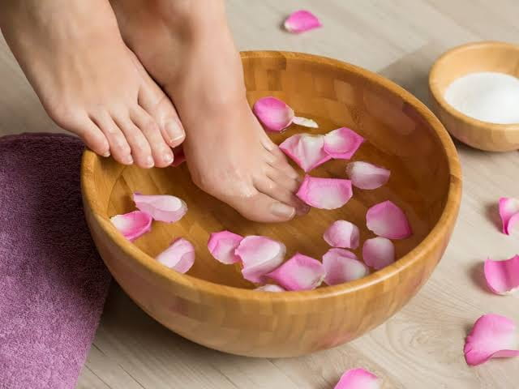

Agende Uma SessãoO SPA dos Pés é um ritual de cuidado e conforto que pode incluir higienização, imersão, esfoliação, hidratação e massagem leve. As etapas e os produtos são escolhidos conforme o protocolo combinado e as condições da pele. Não substitui cuidados podológicos ou avaliação clínica quando necessários.
A sessão pode começar com uma imersão breve e higienização dos pés. Conforme o serviço combinado, o profissional realiza esfoliação suave, aplica produtos hidratantes e finaliza com massagem leve. Os utensílios são higienizados entre atendimentos e qualquer etapa pode ser ajustada se causar desconforto.